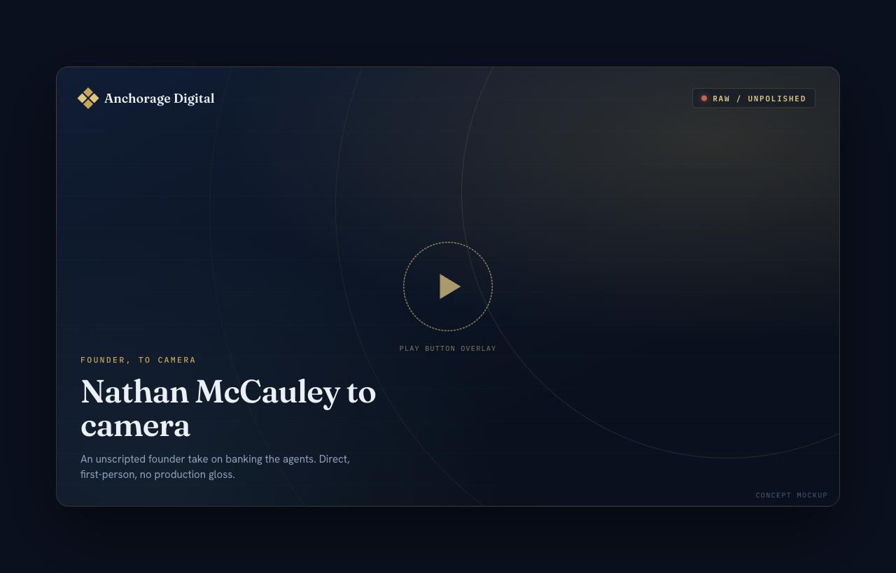
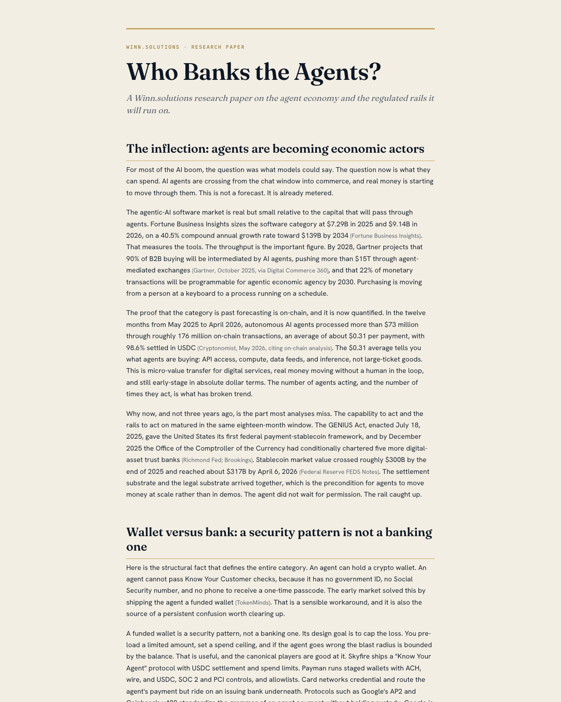

A two-week, multi-voice launch that makes Anchorage the name attached to one question: agents are becoming economic actors, and what lets them act is regulated financial rails. The whole sprint argues that banking an agent is a controls problem (segmented accounts, spending limits, Know Your Agent, a human on the hook), not an AI problem.
Read it top to bottom: a belief-anchored phase map (Hype to Launch to Convert), then the Launch Calendar as a wide grid that scrolls right, the five subsprints (SS-1 to SS-5) that feed the funnel, a content library of the live Google Docs, the partner overview, the conversion rationale, and the action items. Every working doc linked here is a live Google Doc or Sheet, open for comment. Engagement figures across this build are illustrative projections, not performance claims.
The sprint as three belief-anchored stages. Each starts from a Nathan belief (the why), carries it with named assets, and ships with a checklist of deliverables to confirm before that stage is met. Hype creates the attention, Launch earns the press, Convert routes everything to one waitlist.
The two-week run as a wide grid that scrolls right. Items are bundled by topic and connection, not sorted by owner, and slotted in the order they go out: first, second, third, with spread-out times. Each day opens with its Narrative and two supporting subs, carries a T-minus label (T-0 = Thu Jun 25), and shows its tweet threads inline: a Nathan tweet with its KOL quote-tweets and comments nested directly under it. Partner co-signs sit on their days; the live interview and the paper drop carry their own associative tweets. The belief footnote on each card is clickable: it reveals the belief and why the post aligns. Owners ride as tags inside each bundle. Engagement is illustrative.

▶ Reveal video poster
🔗 Open the paperThe five supporting tracks that feed the funnel, each labeled and shown with its tweet thread inline (tweet, quote-tweet, comment) and one Google Doc at the top of the block. They live under the Launch Calendar and roll up into the days above.
Hey. Nathan here. No script, no slides. I wanted to say this one directly.
Today is the start of a new frontier for Anchorage. We are pivoting hard into an agentic organization.
[beat]Here is the why. For a while now I have kept saying the same thing. Agents are becoming real economic actors. Right now most of them can advise you. What they still cannot do is act. Hold money. Get paid. Be told no.
And the thing that lets them act is not better AI. It is financial rails.
[beat]So the question I keep coming back to is simple. Who banks the agents?
When an agent pays the wrong party at three in the morning, who picks up the phone. And what can they actually do about it. If the honest answer is no one, then you do not have a bank for agents. You have an agent with a card and crossed fingers.
[to camera]Here is what most people get wrong. They think this is an AI problem. It is mostly a controls problem.
Instead of handing an agent your whole bank account, you give it a segmented one. An allowance. A spending limit. A verified merchant on the other side. A human who is still accountable.
We have spent years inside the regulatory perimeter building exactly those boring, hard parts. Custody. Controls. Knowing precisely who is on the other side of an account. That turns out to be the real work of banking the agents.
[beat]That is what Know Your Agent is about. Banks already do Know Your Customer and Know Your Business. We are taking it one step further. KYA. We do not just underwrite the human who owns the agent. We underwrite the agent itself. Its history. Its identity. A shared understanding of what it is and what it is allowed to do.
This is not meant to be one company holding the whole thing. The industry is better when it is built in the open, by a lot of people.
So we are putting our thinking out this week. And we are opening a waitlist on our agentic page, for the people building where agents meet money. If that is you, come find us. Get on the list.
Every working document, in the order it lands in the sprint. All are live Google Docs and Sheets, open for comment.
Why a partner makes this work, the strategic advantage, what we are asking, and the invitation into the paper. Anchored to Ribbit-the-VC and Micky Malka at the thesis level. The whole argument is more credible when it comes from two seats at once: Anchorage builds the rails, Ribbit has spent its career backing new kinds of accounts.
The conversion mechanic for the launch: run a waitlist signup, not a design-partner application.
Seven topic groups, each with dependency-numbered sub-items. Owners ride as tags; due dates are T-minus labels (T-0 = Wed Jul 1). Confirm owners against the real team before this is binding.